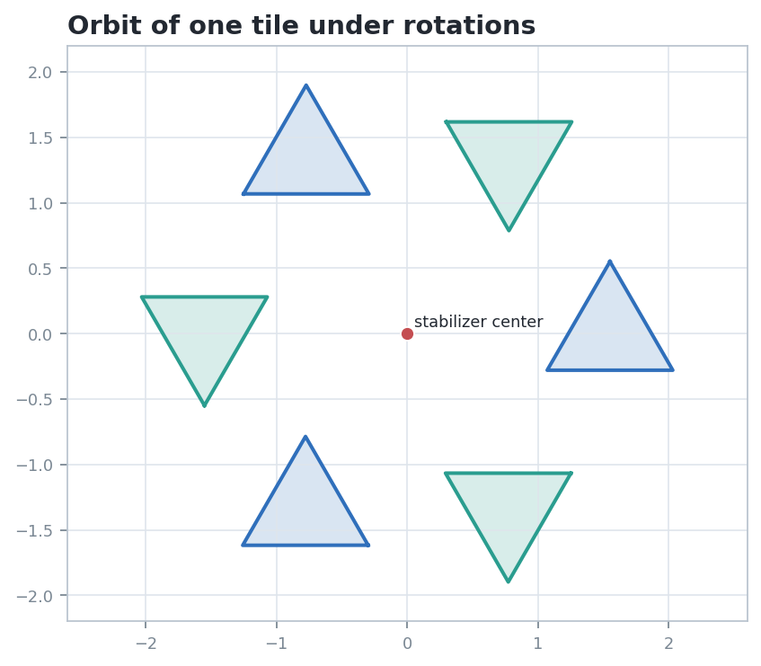
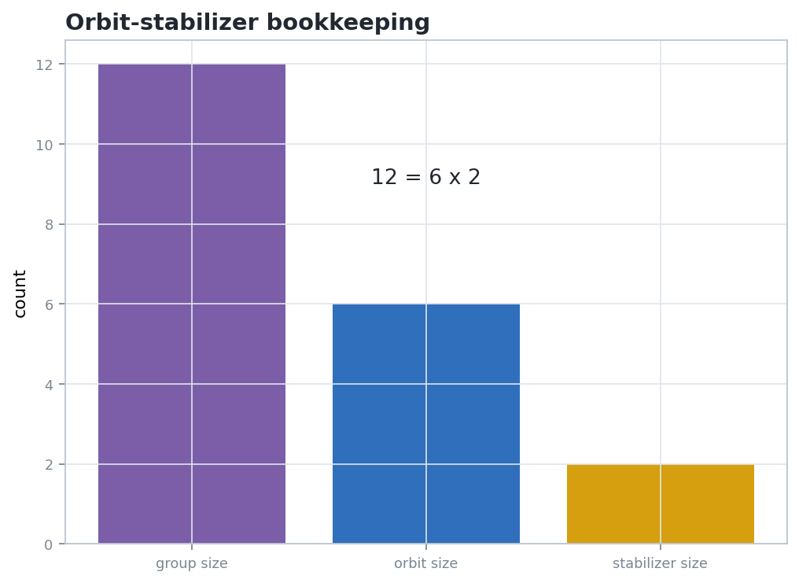

Group Actions: Examples And Applications
What does a group action preserve, and what does it sort into equivalent pieces?
01-group-actions-examples-and-applications.ipynb\(|G|=|Gx|\,|G_x|\)
tile orbit and stabilizer counts
tilings, crystals, symmetric solids
What Is A Group Action?
A group acts when each group element is realized as a legal transformation of a set.
A left action of a group \(G\) on a set \(X\) is a map \(G\times X\to X\), written \(g\cdot x\), such that
\[e\cdot x=x,\qquad (gh)\cdot x=g\cdot(h\cdot x).\]
Action Audit
- State the set \(X\) before naming the transformations.
- Check the identity move and the composition move.
- Name the preserved relation: distance, incidence, adjacency, orientation, or type.
Orbits And Stabilizers
An action gives a partition of \(X\) and a local symmetry group at each point.
\[Gx=\{g\cdot x:g\in G\},\qquad G_x=\{g\in G:g\cdot x=x\}.\]
The orbit is a set of positions. The stabilizer is a subgroup of moves.
If \(G\) is finite, then \(|G|=|Gx|\,|G_x|\). Equivalently, each visible position is reached by exactly \(|G_x|\) group elements.
The Notebook Certificate
The chapter artifact models a twelve element action with six visible tile placements and a two element stabilizer.

Inspect the six tile placements, not the raw coordinates of the plotted vertices.

Faithful And Transitive Are Different
These properties describe different failures: invisible elements versus disconnected orbit structure.
\[\ker(G\curvearrowright X)=\{g\in G:g\cdot x=x\hbox{ for all }x\in X\}.\]
The action is faithful when this kernel is trivial.
Warning
A nontrivial stabilizer at one point does not automatically mean the action is nonfaithful. Faithfulness asks whether a move fixes every point.
The action is transitive when every pair of points lies in the same orbit: for all \(x,y\in X\), some \(g\in G\) satisfies \(g\cdot x=y\).
| Question | Diagnostic |
|---|---|
| Faithful? | Does any nonidentity move act as the identity everywhere? |
| Transitive? | How many orbits does \(X\) split into? |
| Effective set? | Would changing \(X\) change the answer? |
Tilings As Actions
A tiling turns repeated geometric pieces into an orbit problem.
Let \(G\) be a symmetry group of a tiling \(T\). It can act on tiles, vertices, directed edges, or flags. Each choice gives different orbits and stabilizers.
Inspection Targets
- Which tile is the chosen representative?
- Which symmetries send it to adjacent copies?
- Which symmetries leave it visibly unchanged?
Crystallographic Groups
Translations create an infinite lattice; stabilizers and quotient cells keep the structure finite enough to inspect.
Separate the infinite translation part from the finite point symmetries. The lattice quotient is a compact cell where orbit and stabilizer data can be recorded.
| Feature | Action question |
|---|---|
| Lattice vectors | Which translations move one cell to another? |
| Point stabilizer | Which rotations or reflections keep a vertex fixed? |
| Quotient cell | Which infinite repetitions become one representative? |
Sphere Tilings And Regular Solids
The same symmetry group has different orbit and stabilizer data on vertices, edges, faces, and flags.
A rotation group can act on several associated sets. Stabilizers grow when the chosen object has more local symmetry.
| Acted-on set | Orbit question | Stabilizer question |
|---|---|---|
| Vertices | Can one vertex move to any other? | Which rotations keep a vertex fixed? |
| Faces | Are all faces equivalent? | Which rotations spin a face in place? |
| Flags | Does symmetry identify every incident triple? | Is any nontrivial move invisible? |
Counting By Fixed Points
Orbit information can often be recovered from how many configurations each group element fixes.
\[\#(X/G)=\frac{1}{|G|}\sum_{g\in G}|\operatorname{Fix}(g)|\]
Fixed configurations average to orbit count. This is the enumeration companion to orbit stabilizer.
Why This Fits The Chapter
Actions convert a classification problem into two ledgers: what each element fixes, and which configurations are equivalent under the group.
What Survives The Action?
The right invariant depends on the object, the group, and the level of structure being studied.
| Action | Moved data | Typical invariant | Common application |
|---|---|---|---|
| Rotations of a tile | vertex coordinates | shape and adjacency | orbit stabilizer certificate |
| Plane tiling symmetries | individual copies | incidence pattern and local type | fundamental domains |
| Lattice translations | cell location | quotient cell combinatorics | crystallographic groups |
| Polyhedron rotations | faces, edges, vertices | incidence and spherical metric | regular solids |
Object
What set receives the action: points, tiles, faces, flags, or configurations?
Move
Which transformations are legal, and how does composition match the group law?
Invariant
Which relation refuses to change after every legal move?
Common Pitfalls
Most errors come from losing track of which set is being acted on.
Pitfall 1: Group Equals Orbit
The group is made of transformations. The orbit is made of objects reached by transformations.
Pitfall 2: Stabilizer Must Be Trivial
A symmetric object can have several moves that leave it fixed. That is information, not a defect.
Pitfall 3: One Picture Proves The Action
A diagram suggests the move. The proof checks identity, composition, and preserved structure.
- What is \(X\)?
- What is \(G\)?
- What is \(g\cdot x\)?
- What relation is invariant?
- Which subgroup fixes the chosen object?
Course Connection
The same discipline returns later for affine maps, projective homographies, Euclidean isometries, and orthogonal groups. Start by naming the action.
Recompute The Certificate
Change the marked object and predict how the orbit and stabilizer trade size.
The notebook sample has \(|G|=12\), \(|Gx|=6\), and \(|G_x|=2\). Suppose the marked tile has no nontrivial internal symmetry. Predict \(|G_x|\) and \(|Gx|\).
Answer Pattern
If \(|G_x|=1\), then the orbit grows to \(|Gx|=12\). The total group size is unchanged; only the trade between visible positions and invisible fixes changes.